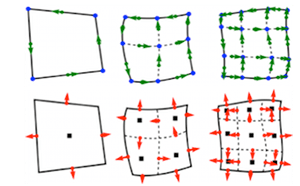

Features
The goal of MFEM is to enable research and development of scalable finite element discretization and solver algorithms through general finite element abstractions, accurate and flexible visualization, and tight integration with the hypre library.
Conceptually, MFEM can be viewed as a finite element toolbox that provides the building blocks for developing finite element algorithms in a manner similar to that of MATLAB for linear algebra methods.
Higher-order Finite Element Spaces

MFEM supports a wide variety of finite element spaces in 2D and 3D, including arbitrary high-order:
{kind=link}
{kind=link}
- H1-conforming, H(div)-conforming, H(curl)-conforming spaces,
- discontinuous L2 spaces,
- numerical trace (interfacial) spaces,
- NURBS spaces for isogeometric analysis.
Many bilinear and linear forms defined on these spaces, as well as linear operators such as gradient, curl and embedding between these spaces, are available in the code.
{kind=link}
{kind=link}
Flexible Discretization
In addition to classical Galerkin methods, MFEM enables the quick prototyping of
- mixed finite elements,
- Discontinuous Galerkin (DG) methods,
- isogeometric analysis methods,
- Discontinuous Petrov-Galerkin (DPG) approaches.

Wide Range of Mesh Types
MFEM supports arbitrary element transformations and includes classes for dealing with:
{kind=link}
- triangular, quadrilateral, tetrahedral and hexahedral elements,
- conforming local mesh refinement (triangular/tetrahedral meshes),
- non-conforming mesh refinement (quadrilateral/hexahedral meshes), including anisotropic refinement,
- higher-order elements with curved boundaries,
- surface meshes embedded in 3D,
- topologically periodic meshes,
- 1D meshes.
{kind=link}
Parallel and Scalable
MFEM supports MPI-based parallelism throughout the library, and can readily be used as a scalable unstructured finite element problem generator.
- MFEM-based applications have been scaled to hundreds of thousands of parallel cores.
- An experimental support for OpenMP acceleration is also included.
{kind=link}
A serial MFEM application typically requires minimal changes to transition to a high-performing parallel version of the code, where it can take advantage of the integrated scalable linear solvers from the hypre library.
Built-in Solvers
MFEM is commonly used as a "finite element to linear algebra translator", since it can take a problem described in terms of finite element-type objects, and produce the corresponding linear algebra vectors and sparse matrices.
{kind=link}
{kind=link}
Several matrix storage formats are available including dense, compressed sparse row (CSR) and parallel compressed sparse row (ParCSR). Block vectors, operators and matrices are also supported.
A variety of solvers are available for the resulting linear algebra systems (or semi-discrete time-integration problems):
- point-wise and polynomial serial and parallel smoothers,

- Krylov solvers, such as PCG, MINRES and GMRES applicable to general operators in serial and in parallel,
- high-performance preconditioners from the hypre library including the BoomerAMG, AMS and ADS solvers,
- sequential sparse direct solvers from the SuiteSparse library,
- explicit and implicit high-order Runge-Kutta time integrators,
- solvers for nonlinear problems (Newton) and for single linearly constrained quadratic minimization problems.
{kind=link}
Extensive Examples
MFEM includes a number of well-documented example codes that can be used as tutorials, as well as simple starting points for user applications. Some of the included example codes are:
- Example 1: nodal H1 FEM for the Laplace problem,
- Example 2: vector FEM for linear elasticity,
- Example 3: Nedelec H(curl) FEM for the definite Maxwell problem,
- Example 4: Raviart-Thomas H(div) FEM for the grad-div problem,
- Example 5: mixed pressure-velocity FEM for the Darcy problem,
- Example 6: non-conforming adaptive mesh refinement for the Laplace problem,
- Example 7: Laplace problem on a surface (the unit sphere),
- Example 8: Discontinuous Petrov-Galerkin (DPG) for the Laplace problem,
- Example 9: Discontinuous Galerkin (DG) time-dependent advection,
- Example 10: time-dependent implicit nonlinear elasticity.
Most of the examples have a serial and a parallel version, illustrating the ease of transition and the minimal code changes between the two.
Accurate and Flexible Visualization
The general (high-order) meshes and finite element functions in MFEM can be visualized accurately using the companion OpenGL visualization tool GLVis, which is built on top of MFEM.
The VisIt visualization and analysis tool also natively supports MFEM formats.
Lightweight, Portable and Easily Extendable
The MFEM code base is relatively small and is written in highly portable C++ (e.g. with very limited use of templates and the STL).
- The serial version of MFEM has no external dependencies and is straightforward to build on Linux, Mac and Windows machines.
- The MPI-parallel version uses two third-party libraries (hypre and METIS), and is also easy to build with an MPI compiler.
- On most machines, both versions can be built in under a minute by typing: "
make serial -j" and "make parallel -j" respectively.
The object-oriented design of MFEM separates the mesh, finite element and linear algebra abstractions, making it easy to extend the library and adapt it to a variety of applications.
Open Source
MFEM is an open-source software, and can be freely used under the terms of the LGPL 2.1 license.